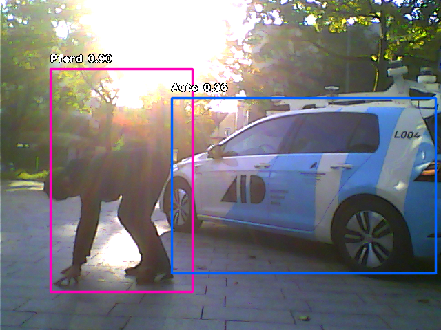
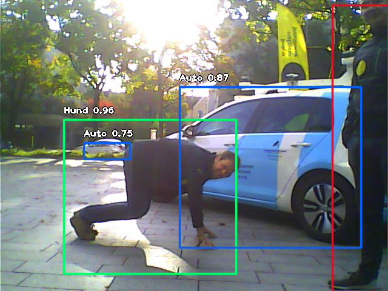
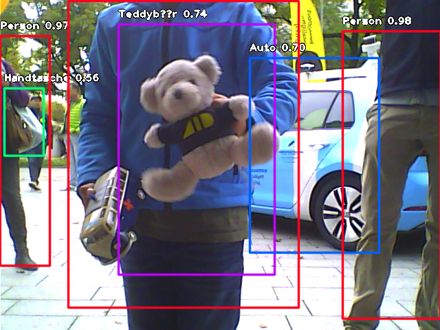
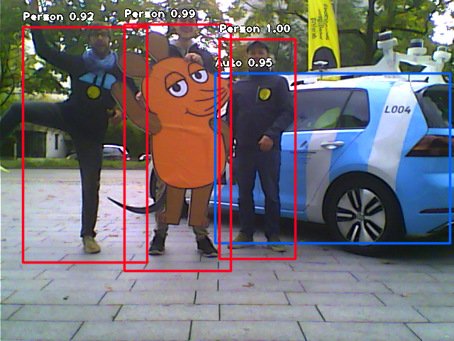
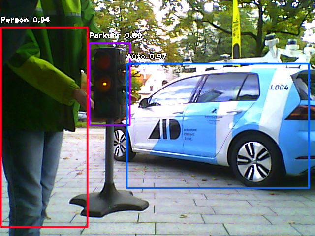
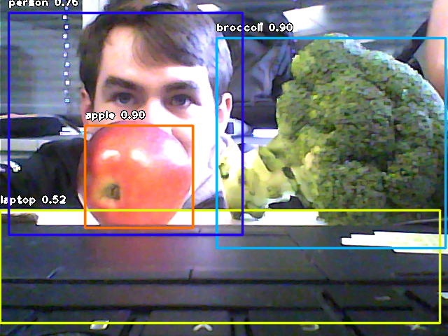

Last week the company I work for, Autonomous Intelligent Driving, held an open day for children. I showed the kids an object detector to teach kids what Artificial Intelligence can detect.
The setup I used was overall quite easy. I used OpenCV to interface with the webcam, and a Python library called ImageAI(https://github.com/OlafenwaMoses/ImageAI) for the wrapping of the object detection network. The network I downloaded, Yolo V3, gives you a wide variety of 80 objects that the neural network can detect. We put a collection of these objects in a box so kids could try them out on the neural network. Besides that we made a list with questions to ask kids to get them to think about AI, and what needs to be on a self-driving car.
Overall kids were quite enthusiastic about the demonstration. It was cool that they themselves were detected, and it’s good for kids to have a bit of interaction by trying out different objects. Things that were difficult to detect during the day were the smaller “out of context” objects, which sparked discussion on whether the car needs to detect broccoli at all… Another cool thing is that we challenged people to behave in an adversarial way: try to fool the neural network into thinking you are a horse or dog. This was actually possible with a bit of effort.
In case someone is interested in replicating this for themselves, take a look at this repository:
https://github.com/rmeertens/selfdriving_car_ai_for_kids . Also, let me know if you have ideas to make it better.
Here are some impressions of the day, taken with the webcam I used during the day itself:      
{kind=link}
{kind=link}
{kind=link}
{kind=link}
{kind=link}
{kind=link}